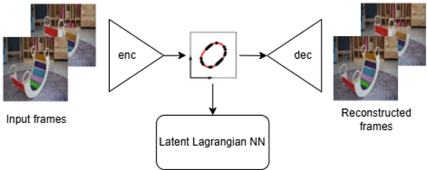
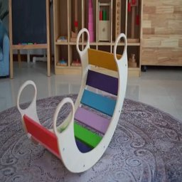
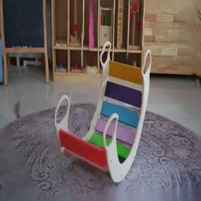
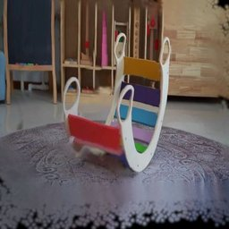
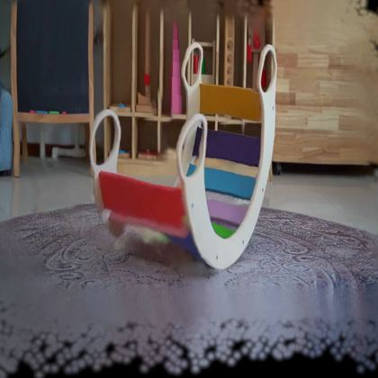

LaGSplat: Latent Lagrangian Gaussian Splatting

experiment 1 · synthetic
Gaussians parameterised by the latent state
Filmed video
Space-time volume
the space-time volume
Space-state volume
the space-state volume
experiment 2 · real test case
One-degree-of-freedom test case: an oscillating rocking chair
Space-state volume
Reconstructed frame




Interactive 3D scene
experiment 3 · real test case
Two-degree-of-freedom test case: a bag hanging from its handle
Latent space trajectory
GS decoder output
experiment 4 · real test case
Four-degree-of-freedom test case: a pneumatically actuated soft arm
A two-segment soft continuum robot, trained on the public dataset of Krauss et al. (2026). The latent space here has four dimensions, so the Gaussians are parameterised by (x, y, q₁, q₂, q₃, q₄) and the state no longer fits in a plane. The arm is not only released from an initial condition, it is also driven by the four pneumatic chambers of the real robot. Pressure enters the latent Euler-Lagrange equation on the right-hand side, so the sliders below carry the same input the physical actuator receives.
ℒ = 𝒯 − 𝒱 and 𝒟 are the learned kinetic, potential and dissipation terms, P the four chamber pressures set by the sliders, and f a force applied by dragging in the image, transported to the latent space by the decoder Jacobian J(q).
Four latent coordinates over time
GS decoder output
Cite this work
This page illustrates the LaGSplat preprint. If you use this work, please cite it as:
@misc{pottier2026lagsplat,
title = {LaGSplat: Inferring Physics-Governed Interactive Simulation from
Monocular Video Using Latent Lagrangian Gaussian Splatting},
author = {Pottier, Louen},
year = {2026},
eprint = {2608.16324},
archivePrefix = {arXiv},
url = {https://arxiv.org/abs/2608.16324}
}